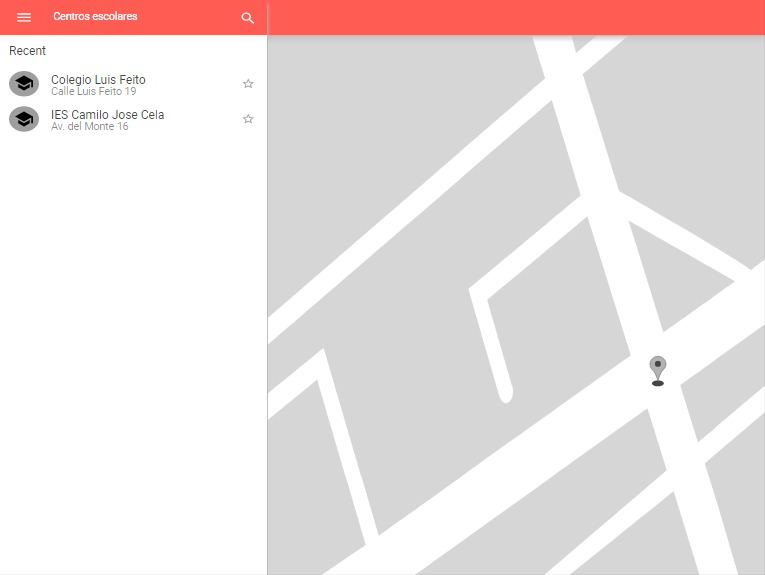

La aplicacion que vamos a desarrollar utilizara datos abiertos de la ciudad española de Madrid.
Estos datos recogen informacion sobre los centros de educación de la citada ciudad, tanto de centros infantiles, colegios públicos, universidades, escuelas oficiales de idiomas...
La aplicación busca dar comodidad a los usuarios a la hora de buscar centros cerca de su localización.
Todo ello orientado principalmente a la educación y cultura de los ciudadanos de Madrid.
El siguiente mockup es provisional un diseño de bajo nivel diseñado para introducir las bases de lo que será la aplicación
